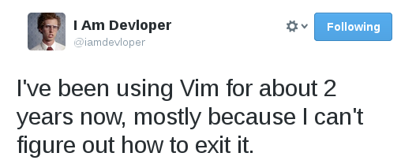

Vim Nedir?
Vim gelişmiş bir metin editörüdür. Yanlış düşünülenlerden biriside vimin IDE olduğudur.
Vim IDE değildir, shell veya debugger'ı yoktur. Vim 6 farklı moda sahiptir ve bunlardan
sadece 1 tanesi metin düzenlemeyle ilgilidir.

Yeni başlayanların ilk karşılaştıkları sorun kuşkusuz nasıl kapatacağını bulamamasıdır.
Bu vimi ilk açışımda herkes gibi benimde başıma gelmişti.
Bu kısa girişin ardından -lafı çokta uzatmadan- artık yavaştan komutlara bakmaya başlayabiliriz.
-Temel Komutlar
h - İmleci sola hareket ettirir
j - İmleci aşağıya hareket ettirir
l - İmleci sağa hareket ettirir
k - İmleci yukarıya hareket ettirir
5h - 5 karakter sola götürür, pek çok komut bu sayısal girdiyi kabul eder
:q - Dosyayı kapatır
:q! - Dosyayı kaydetmeden kapatır
:wq veya :x - Dosyayı kaydeder ve kapatır
:w - Dosyayı kaydeder
w - İmleci sonraki kelimenin başına götürür
b - İmleci önceki kelimenin başına götürür
0(sıfır) - İmleci satırın başına götürür
$ - İmleci satırın sonuna götürür
:n - İmleci n. satıra götürür
r - Bir karakterlik replace imkanı sağlar
i - İmlecin olduğu yere insert eder
I - Sayfanın başlangıcına insert eder
a - İmlecin sonuna ekler
A - Sayfanın sonuna ekler
. - Son komutu tekrar çağırır
u - Son değişikliği geri al
escape - İnsert modundan çıkar
-Silme Komutları
x - İmlecin üstünde durduğu karakteri siler
dw - İmlecin üstünde durduğu yerden bir sonraki kelimeye kadar siler
db - Önceki kelimeyi siler
dd - Satırı siler
d$ - İmleçten satırın sonuna kadar siler
d^ - İmleçten satırın başına kadar siler
-Kopyalama(yank) Komutları
yy - İmlecin olduğu satırı kopyalar
y$ - İmleçten satırın sonuna kadar kopyalar
yw - İmlecin durduğu yerden kelimenin sonuna kadar kopyalar
5yy - 5 satır kopyalar
-Yapıştırma Komutları
p - İmlecten sonra yapıştırır
P - İmlecin olduğu yere yapıştırır
"2p - 2. Buffer'daki veriyi yapıştır (Toplam 9 buffer mevcut)
cw - Üstünde durulan kelimeyi yenisiyle değiştir
J - Bir sonraki satırı, imlecin üstünde durduğu satırın sonuna taşır
-CTRL Komutları
^u - Yarım ekran yukarı
^d - Yarım ekran Aşağı
^b - Tam ekran yukarı
^f - Tam ekran aşağı
-Arama Komutları
:/ veya / - Yanına yazıcağınız kelimeyi aşağıya doğru arar
:? veya ? - Yanına yazıcağınız kelimeyi yukarıya doğru arar
:g/aaa/s//bbb/g - Tüm "aaa" kelimelerini "bbb" ile değiştirir
:g/a/s// /g - Tüm "a" kelimelerini boşlukla değiştirir
:g/a/s///g - Tüm "a" siler yerine bişey yazmaz
Bu sayfa yeni başlayanlara kolaylık sağlaması amacıyla hazırlanmıştır. Umarım faydalı olmuştur.
Kendinizi vim kullanımında geliştirmek isterseniz aşağıya eklediğim linkler faydalı olacaktır.
Bu başlıkta benden bu kadar soru, sorun ve önerileriniz için bana mail atabilirsiniz. İyi günler, verimli vakitler..